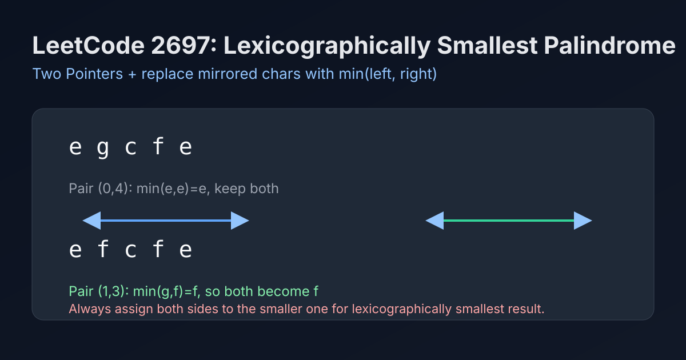

LeetCode 2697: Lexicographically Smallest Palindrome (Two Pointers + Min Replacement)
LeetCode 2697StringTwo PointersToday we solve LeetCode 2697 - Lexicographically Smallest Palindrome.
Source: https://leetcode.com/problems/lexicographically-smallest-palindrome/

English
Problem Summary
Given a lowercase string s, change some characters so that s becomes a palindrome. Among all valid palindromes, return the lexicographically smallest one.
Key Insight
For each mirrored pair (i, j), the resulting characters must be equal. To make the whole string lexicographically smallest, set both to min(s[i], s[j]). This greedy choice is always optimal because earlier positions dominate lexicographic order.
Algorithm
- Convert string to mutable char array.
- Use two pointers i=0, j=n-1.
- While i < j, set both ends to the smaller character, then move inward.
- Return the rebuilt string.
Complexity Analysis
Time: O(n).
Space: O(n) for mutable array (or output string construction).
Common Pitfalls
- Choosing the larger character for a pair, which breaks lexicographic minimality.
- Forgetting to write both sides after deciding the minimum.
- Mishandling odd-length middle character (it stays unchanged naturally).
Reference Implementations (Java / Go / C++ / Python / JavaScript)
class Solution {
public String makeSmallestPalindrome(String s) {
char[] chars = s.toCharArray();
int i = 0, j = chars.length - 1;
while (i < j) {
char c = (char) Math.min(chars[i], chars[j]);
chars[i] = c;
chars[j] = c;
i++;
j--;
}
return new String(chars);
}
}func makeSmallestPalindrome(s string) string {
b := []byte(s)
i, j := 0, len(b)-1
for i < j {
c := b[i]
if b[j] < c {
c = b[j]
}
b[i], b[j] = c, c
i++
j--
}
return string(b)
}class Solution {
public:
string makeSmallestPalindrome(string s) {
int i = 0, j = (int)s.size() - 1;
while (i < j) {
char c = min(s[i], s[j]);
s[i] = c;
s[j] = c;
++i;
--j;
}
return s;
}
};class Solution:
def makeSmallestPalindrome(self, s: str) -> str:
chars = list(s)
i, j = 0, len(chars) - 1
while i < j:
c = min(chars[i], chars[j])
chars[i] = c
chars[j] = c
i += 1
j -= 1
return "".join(chars)var makeSmallestPalindrome = function(s) {
const arr = s.split('');
let i = 0, j = arr.length - 1;
while (i < j) {
const c = arr[i] < arr[j] ? arr[i] : arr[j];
arr[i] = c;
arr[j] = c;
i++;
j--;
}
return arr.join('');
};中文
题目概述
给定一个小写字符串 s，你可以修改其中若干字符，使它变成回文串。在所有可行回文串中，返回字典序最小的那个。
核心思路
对于每一对对称位置 (i, j)，最终必须相等。为了让整体字典序最小，直接把两边都改成 min(s[i], s[j])。这是贪心最优，因为越靠左的位置对字典序影响越大。
算法步骤
- 把字符串转为可修改字符数组。
- 双指针从两端向中间移动。
- 每次取两端较小字符，写回到左右两端。
- 指针收缩直到相遇，返回新字符串。
复杂度分析
时间复杂度：O(n)。
空间复杂度：O(n)（字符数组/结果构造）。
常见陷阱
- 选了较大字符，导致不是字典序最小。
- 只改一侧没改另一侧，回文条件被破坏。
- 对奇数长度中点做了不必要处理。
多语言参考实现（Java / Go / C++ / Python / JavaScript）
class Solution {
public String makeSmallestPalindrome(String s) {
char[] chars = s.toCharArray();
int i = 0, j = chars.length - 1;
while (i < j) {
char c = (char) Math.min(chars[i], chars[j]);
chars[i] = c;
chars[j] = c;
i++;
j--;
}
return new String(chars);
}
}func makeSmallestPalindrome(s string) string {
b := []byte(s)
i, j := 0, len(b)-1
for i < j {
c := b[i]
if b[j] < c {
c = b[j]
}
b[i], b[j] = c, c
i++
j--
}
return string(b)
}class Solution {
public:
string makeSmallestPalindrome(string s) {
int i = 0, j = (int)s.size() - 1;
while (i < j) {
char c = min(s[i], s[j]);
s[i] = c;
s[j] = c;
++i;
--j;
}
return s;
}
};class Solution:
def makeSmallestPalindrome(self, s: str) -> str:
chars = list(s)
i, j = 0, len(chars) - 1
while i < j:
c = min(chars[i], chars[j])
chars[i] = c
chars[j] = c
i += 1
j -= 1
return "".join(chars)var makeSmallestPalindrome = function(s) {
const arr = s.split('');
let i = 0, j = arr.length - 1;
while (i < j) {
const c = arr[i] < arr[j] ? arr[i] : arr[j];
arr[i] = c;
arr[j] = c;
i++;
j--;
}
return arr.join('');
};
Comments